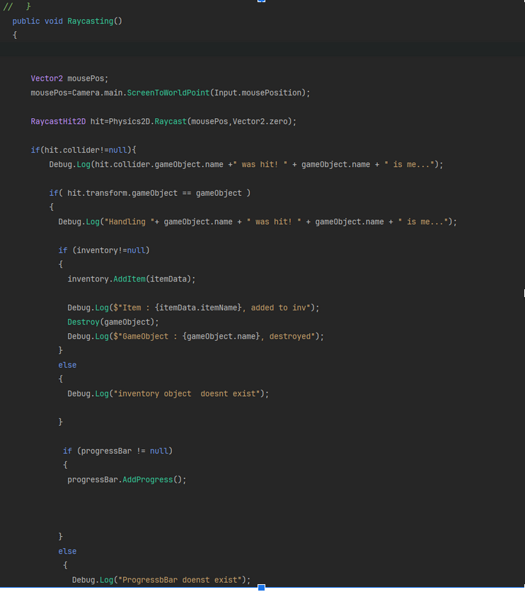
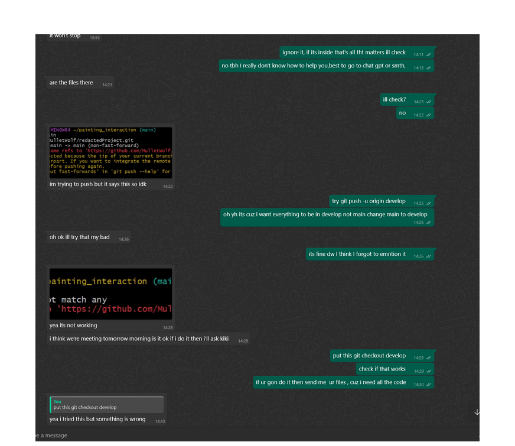
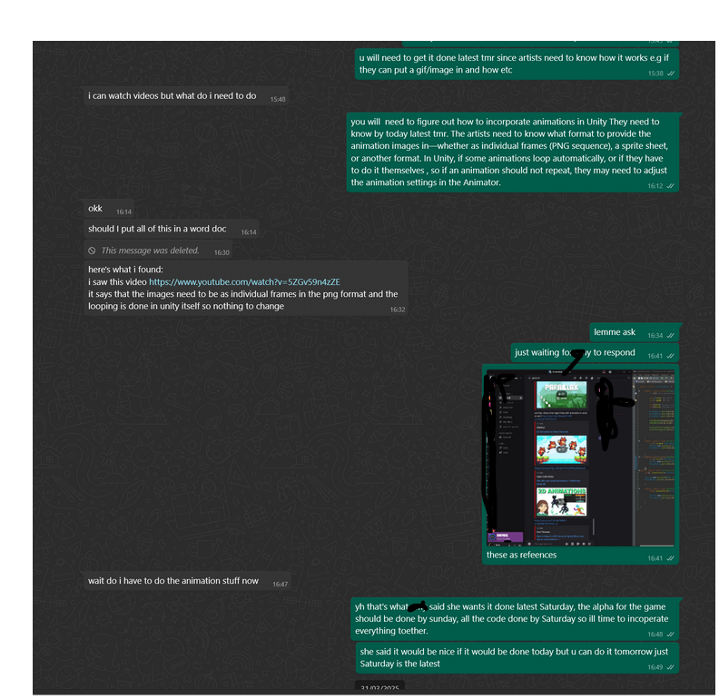

Week 5
Inventory System and UI Collaboration
Task Breakdown & Team Coordination
InventorySystem by BMoAfter discussing tasks with the team, I realized Kiki (UI developer) needed the inventory and progress bar systems functional before she could design their interfaces. To unblock her work, I prioritized implementing the core inventory logic.
To be honest, I have been losing my mind trying to understand the inventory system.I understand the whole concept, but getting it down in code is what confused me.I asked the lecturer Gavin for help, and he explained to me what the inventory is.I used youtube videos to understand it, after rewatching it, I had a better understanding and decided to rewrite it , in a way that I would understand better.Dividing the inventory into 3 main classes, ItemData, Inventory Item and InventoryManager was really helpful.I used this video to help me understand it better.I learned that using ScriptableObjects helps separate data from logic, making it easier to manage and modify items later.I did not understand the difference between this and GameObjects , but I started to get the hang of it after I followed this youtube video.For the clicking of objects , I decided to used Raycasting to control the clicks of the Items. I wanted it to work for ui images and objects with box collision.It was difficult to understand, but after a few youtube videos, unity docs,taking the time to read each line and understand what they do I got the hang of it.
Inventory System Implementation
I started by researching inventory systems, referencing tutorials like Code Monkey’s ScriptableObject Inventory and GMO’s designs.
The system required three key classes:
ItemData
This stores the data (name, type, icon, etc.) for each type of item.Every item in the game will reference an ItemData object.
I learned that using ScriptableObjects helps separate data from logic, making it easier to manage and modify items later.I did not understand the difference between this and GameObjects , but I started to get the hang of it after I followed this youtube video.
ScriptableObjects by CodeMonkeyInventoryItem
There is an InventoryItem class that represents each item in the inventory. It calls the ItemData class to use the variables within it. The class uses a constructor to create each slot in the inventory, which is then managed by the InventoryManager. I have implemented Add and RemoveQuantity methods to manage the item quantities.
InventoryManager
I used this class to track all the items collected by the player, which will be visible in the inventory through their corresponding sprite images. I implemented a dictionary of InventoryItems to store the items. The manager is designed to add or remove items as the player collects or uses them. The video I watched used a dictionary for this purpose, which took some time to get used to, as I had never heard of using dictionaries to store items before. However, I learned that dictionaries are mainly used for fast lookups, which makes them ideal for this task.The UI developer wanted the inventory to be limited to one space, where navigating left and right would bring the player to the next item. After some time of consideration, I realized that this wasn’t my task, as achieving this functionality requires the use of the UI. Therefore, it’s something the UI developer should handle, as it involves updating the inventory display and managing item navigation.
ClickItem
To make it more relevant to the game, which is in third-person perspective, I decided to use raycasting. Once the gem is clicked, it gets destroyed and then added to the inventory. I used this video here to understand raycasting more.
This code checks if an item is clicked by using raycasting. When the item is hit, a certain action occurs, such as adding the item to the player's inventory and updating the progress bar. If the item is not hit, it simply logs that the item wasn’t interacted with.Once an item is clicked: It gets added to the inventory.
The progress bar is automatically increased by 1. This progress bar tracks the player’s progress with tasks in the game.The ProgressBar main concept is it increases when each task is completed, and once it is full, then the cipher is added to the inventory.
Technical Troubleshooting and Game Inspiration
Week6
I created a github repository so that my team can collaborate with each other.I made sure to organize it in a way where everyone has their own specific folder in order to prevent clashes. I want to create branches for diff roles, so then when it's completed they go into main branch I've been facing several issues with my Git setup for my Unity project. Initially, I encountered errors when running commands like git add ., with permission denied errors on files in the Temp folder and warnings about line endings (LF replaced by CRLF), which confused me about how Git was handling my files. I told my struggles with a friend (Brendan) who is in 4th year, and the leader of Skynet, he helped me understand how to use JetBrains, how to use it to work with github and how to push and commit changes unto Github.He told me that I would need to put files inside my empty folders, since GitHub doesn't allow folders that are empty and recommended a gitkeep file.Additionally, Git wasn't tracking empty directories, so I had to figure out how to commit those by adding placeholder files like .gitkeep or even temporary empty .cs files. On top of that, I had trouble locating and correctly placing my .gitignore file—it ended up nested within my .idea folders rather than being in the root of my project—and I had to ensure that IDE-specific folders like .idea and .vscode were either removed from tracking or added to .gitignore. Finally, I also needed guidance on creating and managing branches for different roles within my team, so that everyone could work on features separately without conflicts. I also started researching on how to complete the dialogue tasks, in order to know how to help my teammate.I made sure to constantly check in on how the people were doing with their code, to know if we are up to schedule,
Week 7
I started completing the game development document. I offered to do this because I understand that my teammates may not have much time to help me with it. I began by watching videos online to understand how to structure it, as I was quite confused and overwhelmed about where to start. Once I understood the structure, writing it out was easier than I thought; the only problem was the sheer amount of content that needed to be written.
I was unsure about some parts of the actual plot, such as where the player would start when they pressed play. I asked Amy on WhatsApp, and she kindly offered to explain it in Discord, which was a big help. After that, writing the game development document became easier since I finally understood the gameplay in detail, what the 'panning' (the camera movement) was about, and the order of the scenes. Thankfully, the notes I wrote down during every meeting came in handy, as they made writing the document much easier.
The only things missing are the music and art sections. Since my role is as a coder, art isn't my responsibility, so I plan to ask the people working on the art to write down the main art details. I’ve separated the game development document into different sections, such as the summary, game mechanics, narrative (storyline), characters, music and sound, art, and more.
One of my teammates was struggling with pushing their code to GitHub, so I helped them over text. I also asked my teammate to do the animations for the scenes, as I was having a hard time with them. After a while, I decided to do it myself, as I wanted her to learn how to handle sprite movement. Additionally, the artists needed to understand what format to provide the animation images in—whether as individual frames (PNG sequence), a sprite sheet, or another format.
What I think:
I need to create a task system where the progress bar increases in size whenever a puzzle is completed. I can do this by increasing the task bar each time a player clicks an object, so I can use the task.add method within the raycast. The task is a separate class that I incorporate within the gem class. Once the progress bar is completed, I want a debug message that says, "1 gem has been added to the inventory." One gem will be placed in the inventory after every task.
I’m going to use a list since each index will represent a puzzle, and the puzzles need to be completed in order. I will use an array once I know how many puzzles are going to be included, or I will just give the last one a fixed size. When the puzzles are done, the AddProgress method will be placed at the end of the puzzle’s completion. I want the progress bar to fill from index 0 to the last index of the list.
Each index will represent a puzzle, which is why I am using a list. Once the progress bar reaches the maximum (if currentProgress == maxProgress), I want to add the gem to the inventory.
The progress bar keeps track of its progress, not the gem. The gem’s only role is to notify the progress bar that it is a gem.
I want the progress bar to increase whenever a gem is clicked. Therefore, the gem's only goal is to be clicked, and the progress bar handles the incrementing of the progress by 1.
Progress Bar:
- Initialize variables:
- Min
- Max
- Fill
- Add method
Minto indicate where it starts,Maxto indicate where it ends.Fill– using an image to fill the progress bar.FillAmount– filling by the specified amount.
You can simply use a mask and change its length based on progress, revealing more of an already full, single-image progress bar underneath.
Week 8
The only changes I made were to add a progress manager, which had a method of when you're in the gallery scene, and when a painting is unlocked , only if the cipher and painting is unlocked do you go to the scene handled by the CheckProgressAndUnlockMethod. The HandleUnlockAbles method handles when the progress bar is full and a painting and cipher are unlocked. When you click on a painting, it will bring you to the scene of the gallery . If a cipher is clicked, it's added to the inventory. If the progressbar is not full, you have tasks to complete. The CheckProgressAndUnlock method handles that if an item hasn't been unlocked yet, then it becomes unlocked using unlockManager(manages what is unlocked on not based off.
Here,I started understanding C# and following unity tutorials, so my memory of it will come back.I ws contemplating buying a unity course on Udemy, then I realized that it was a waste of money, if I am not going into games development in second year.
When i first created the project i think i set it to 3d core first, and everyone in my team is using 2d core, so i'm trying to understand how to switch it to 2d core, by changing the settings to match the settings in the 2d core map i created as a comparison.After this I divided my tasks into individual tasks such as , I am to get the opening scene done first , then the main interactive scene then the actual gameplay done next. I started understanding the code to see how i should make the code work which each other ,learning scene transitions using “How to make awesome scene transitions in unity” by brackeys .He shows a way to transform to different scenes using a ui element instead of having a large amount of code, just for the scene transition itself.I hope to dio it all in code ,later on
What I learnt from videos
- Canvas Group:
- Allows us to change the alpha of an entire group of objects at once.
- Useful for when you want to change the UI image color later or add text to the UI, where only changing the alpha itself would be efficient.
- Global UI:
- One script to control the fade for all scenes.
- Use
DontDestroyOnLoad(gameObject)to keep it active across scenes.
- Local UI:
- Each scene has a different fade customization.
- Animations:
- Keyframes are used to dictate what action occurs within the animation.
- I used the UI image to transition from 0 (no color) to 1 (black) alpha at the end of a scene.
- Then I swapped the keyframes for the start of the scene.
- Interactivity:
- Making an object non-interactable and avoiding raycasts stops buttons from being unresponsive when switching to a different screen.
- Animation Settings:
- I unchecked the "Loop Time" since I didn't want the animation to continuously go from black to no black every second.
- I wanted the animation to go to black first, then transition into a new scene.
- Scene Transition:
- I want to fade from black to show the actual scene.
- Cross-fade start is triggered once.
- Change transition time - transition duration was previously set to 0.25 and has an exit time.
- Scene Management:
- Unity needs to be prepared with built scenes to handle scene transitions effectively.
- I can only lay scenes inside the build settings.